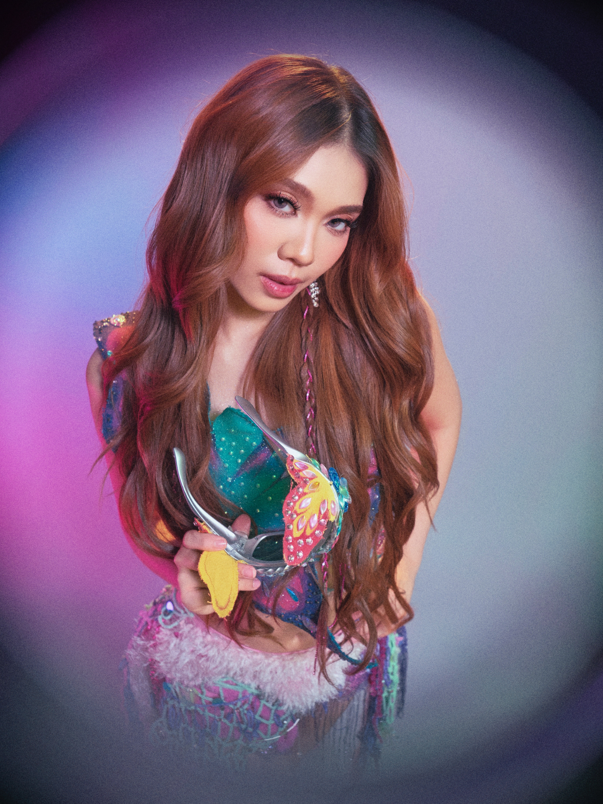

BINI STACEY

Name: Lindtsey Stacey Aubrey Casumpang Sevilla
Stage name: Stacey
Born: July 13, 2003
Birthplace: Bambang, Nueva Vizcaya, Philippines
Education: She attended primary school at Lamut Central School in Ifugao, where she was a majorette, later moved to Nueva Vizcaya for Secondary education, and participated in beauty pageants and modeling, and went on to study at the Japan-Philippines Institute of Technology.
Family: Only child, raised by a single mother who is a fashion designer.
Early Activities:
- Active in church singing during childhood.
- In her school years, she was a majorette; participated in many beauty pageants and modeling, with her mother designing many of her outfits.
- When selected for trainee boot camp (SHA), she passed auditions (including auditions held in Northern Luzon) among many aspirants.
Position within BINI: Main Rapper, Lead Dancer, Sub-vocalist
Media & Other Activities:
- Appeared in the music video "Sining" by Dionela feat. Jay R in July 2024.
- Was a celebrity house guest (along with Jhoanna) in *Pinoy Big Brother: Celebrity Collab Edition* in April 2025.
- Guest Judge on *Drag Den PH* (Season 2) in early 2024 alongside other BINI members.
Interests, Personality & Lifestyle:
- Stacey has shared views on maintaining privacy, staying grounded, and the importance of values like humility and authenticity in public life.
- She's spoken about what being part of BINI means in terms of responsibility to fans (Blooms), how their passion has been a journey, and gratitude for support over years.
- Stacey is described in interviews as mature, grounded, friendly, and down-to-earth despite fame.
- Has a "cozy" aesthetic and loves fashion, the color pink, feminine style, things (Barbie, Bratz, etc).
- She values kindness, staying true to her identity, self-care and respecting her and the group's boundaries (e.g., privacy, rest).
- Strong family bond, especially with her mother, who supported her modeling/pageant interests and helped nurture her artistic side.
"I'm never ashamed of my feminine energy and the things I like."